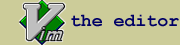
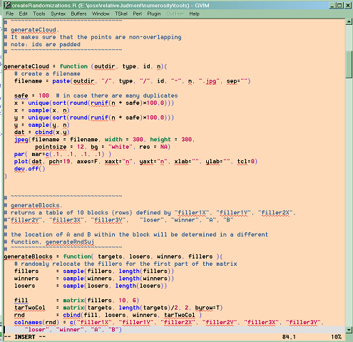

|  | |
There are many good editors for R (Here is a list). However, I prefer to write R code with vim for many reasons.
fast opening and closing. Ideal for notes and short idea proofs
best search (highlight of items found) that I know in any editor
word completion (a la intellisense)
extensible
multiplatform
free, open source
large community
I'll never outgrow it
Fun. Watching a vim guru editing text, one wonders if he has some superpowers and is controlling the text with his mind, not his fingers.
Unfortunately, the vim support for R was a simple syntax file, and not very detailed. So I added the features that I was needing and made them available here.
Better syntax highighting with different colors for types (e.g., matrix, character, etc) functions (e.g., abs, c, etc) and packages. All this is in a vim syntax file, r.vim. Simply copy it into your syntax folder in $VIM/, or in windows $VIM/vimfiles (where $VIM is the base directory where vim is installed). I have tested it with vim 7.0d only, but being a simple syntax file it should work with any version.
The keywords for functions and packages are adapted from the ones here.
Here is a picture of how the syntax looks (using
peachpuff colors): |
 |
Code templates [TODO] in tSkeleton from Rlanguage.tcl. Everytime one creates a new R file with :new a header with personal data appears in the comments, and a small template for loading raw data.
The templates are adapted from the ones that Philippe Grosjean (phgrosjean@sciviews.org) created for textPad. To adapt them for vim, I have used TSkeleton.vim and imap.vim. You can get them at http://www.vim.org
Hotkey to send code from Vim to R. This is an autohotkey script. Autohotkey is a windows scripting language that is based on GUIs and global keystroke plus mouse events. It is a very simple way to connect applications. The script is Here. You will need autoHotkey, a free keyboard macro program. Supports hotkeys for keyboard, mouse, and joystick. Can expand abbreviations as you type them.
In my case, I use F3, but thiscan easily be redefined. If you do not want to download autohotkey, you can always use this executable. It works as an icon in the system tray. Simply keep it in any directory and ask windows to run it everytime it starts. The disadvantage to using the executable is that you cannot change the hotkey. For this to work R must be in SDI mode (Edit > preferences > click on the SDI radio button).It may work in MDI mode, but I haven't tried.
You have to launch R and wait for the console to be ready before you hit the hotkey to send text.
The way it works:
1. Select a block of R code (it can be the whole file). It can be in vim, but the beauty of this is that it works in any other application, including the very own R help window that always displays examples.
2. Hit F3
3. The code will be executed by R, and the focus will be back to the original window (e.g., the editor).
4. Keep editing code with minimal distraction.
If you need help, drop me a line.
Jose Quesada, April 16, 2006